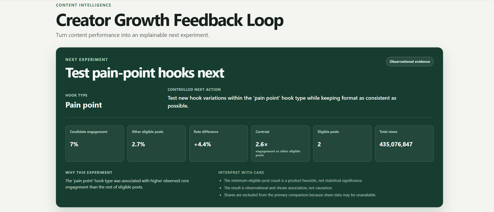

01 / FULL-STACK DEVELOPMENT Live demo

Actual project interface click to enlarge ↗
The figures in this screenshot belong to the public videos analyzed. They do not represent growth caused by this tool.
Creator Growth
Feedback Loop.
After analyzing a video, what should you test next?
A dashboard that imports public YouTube metrics, compares formats and suggests the next content experiment.
MY CONTRIBUTION
Built the application from API imports to the dashboard, with persistent storage and updates without a page reload.
Inside the project decisions, verification and limitations
Consistent imports
URLs and identifiers are validated before import. The flow checks for duplicates and refreshes metrics and recommendations after a video is saved.
How I verified it
I manually checked the dashboard and recommendations using 15 videos. The repository also contains backend and frontend tests and continuous integration configuration.
What the results support
Recommendations rely on observed associations. The project does not demonstrate that following a suggestion causes audience growth.
Watch the walkthrough ↗